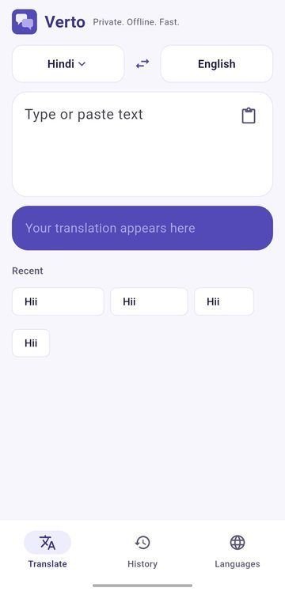
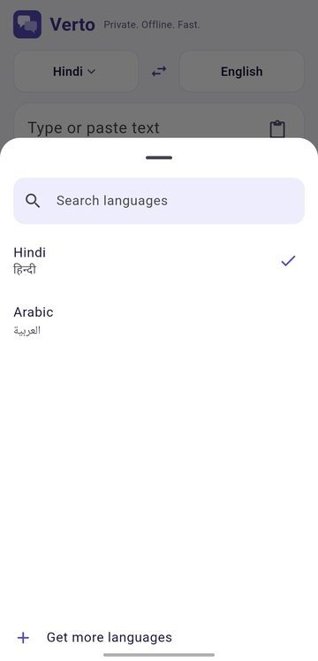
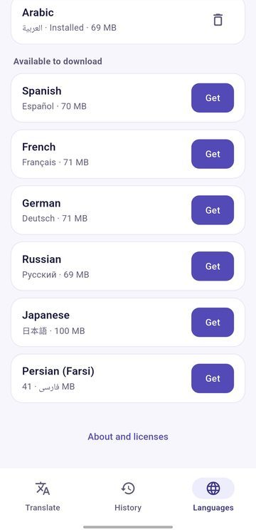
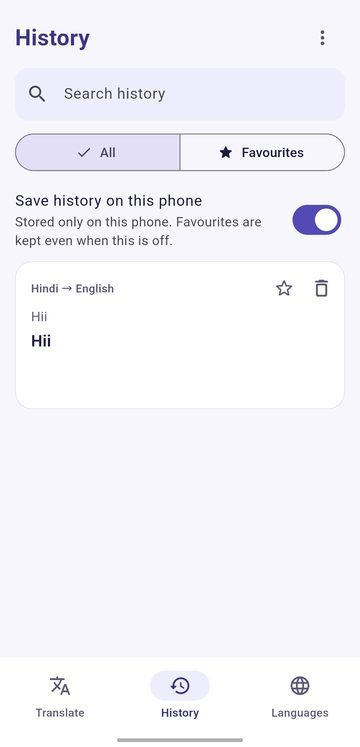

Verto
Private. Offline. Fast. A translator for Android that never sends your text anywhere. English is built in, and you download only the languages you want.
Android · Works offline · GitHub only

Screenshots



Why Verto
Nothing leaves your phone
Translation runs on the device. No account, no ads, no analytics. The text you type is never sent anywhere.
Small app, big choice
English is built in. You download only the languages you want, once, and each pack works in both directions.
Yours to keep
Updating the app or a language never deletes your history, favourites or settings.
Open source
The code is public on GitHub, so you can check what the app does.
Features
Translate
- Offline translation to and from English, with a live preview while you type
- Read aloud with the voices already on your phone
- Big text: show a translation to someone across the table
- Hinglish: Hindi translations can also be shown in Roman letters
- Clipboard offer: optionally offers to translate what you just copied, checked only when Verto opens
Language packs
- Download inside the app, with sizes shown, resume after a break and a SHA-256 check
- Update or remove packs one by one
- One pack gives both directions: English to X and X to English
- Searchable language lists, so a long list still fits a small screen
- A Storage screen shows what packs and downloads use, and lets you clear them
Your data
- History and favourites are stored only on the phone. History can be turned off, favourites stay
- Dark theme follows the system setting
- In-app update: checks GitHub Releases and installs the new APK
Languages
Verto offers every language that Mozilla's Firefox Translations publishes in both directions with English, more than 40 of them, among them Hindi, Bengali, Gujarati, Kannada, Malayalam, Tamil, Telugu, Spanish, French, German, Russian, Ukrainian, Turkish, Japanese, Korean, Chinese, Arabic, Hebrew and Persian. Languages whose model Mozilla still calls beta are marked Beta in the app. Going straight from one language to another, without English, is not offered. Armenian is not available yet.
Word safety net
Neural translators can silently skip a word. Verto reduces this and tells you when it may have happened:
- Text is translated sentence by sentence, long sentences clause by clause.
- Afterwards every meaningful word is translated on its own and looked for in the result.
- Words that seem to be missing are highlighted. Tap one to see its translation and add it.
This is a best-effort check, not a guarantee.
Private by design
No ads, no analytics and no account. Your text, history and favourites stay on your phone. The internet is used to load the list of language packs when you open the app, to download a language pack when you tap Download, and for Check for updates. Only GitHub is contacted, and none of your text or personal data is sent. Read the full privacy policy.
Download
- Open the latest release on GitHub.
- Download the
.apkand open it on your phone. - If asked, allow installing apps from your browser or file manager.
- Open Languages and download the languages you need.
GitHub only, on purpose. To update, use the update check in the app. Your history, favourites and language packs stay.
App details
- Platform
- Android
- Current version
- 1.2.0
- Price
- Free, no ads, no in-app purchases
- Internet
- Not needed to translate. Only for the language list, language downloads and update checks
- Engine
- Bergamot translator (MPL-2.0)
- Models
- Mozilla Firefox Translations models (MPL-2.0)
- Source code
- github.com/lumio-apps/verto
- Privacy policy
- Read the privacy policy
- Report a problem
- GitHub Issues